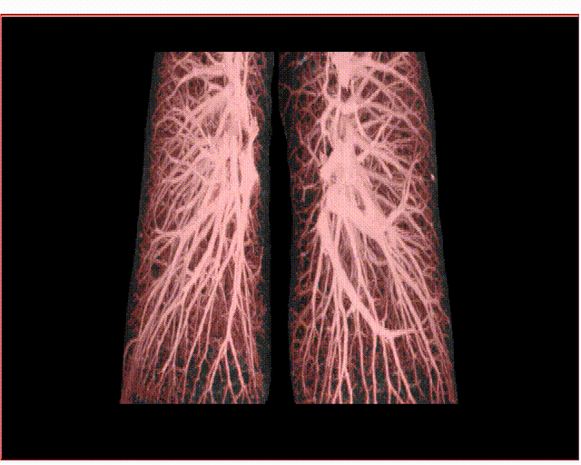

Parametrized manifold convolution
pmConv: convolution on genus-zero surfaces via conformal spherical parametrization, with distortion-aware kernels and controlled tests of rotation and gauge equivariance.
I build geometric deep learning methods that learn directly on brain surfaces, meshes and manifolds — to understand how neuroanatomy changes in stroke, ageing and neurodegeneration.
I am a PhD researcher at the Max Planck Institute for Human Cognitive and Brain Sciences and the Signal and Image Processing Group, Institut für Informatik, Leipzig University. My work sits at the intersection of differential geometry, machine learning and neuroscience.
Currently I am developing pmConv, a convolution operator for signals on genus-zero manifolds that uses conformal spherical parametrization while compensating for geometric distortion, and studying hippocampal shape in healthy ageing, MCI and Alzheimer's disease with normative models of learned shape representations.
Before the PhD I studied Biomedical Engineering in Heidelberg and Electronic Engineering in La Paz, and worked across industry and academia as a software engineer, research assistant and image analyst.
pmConv: convolution on genus-zero surfaces via conformal spherical parametrization, with distortion-aware kernels and controlled tests of rotation and gauge equivariance.
Rigorous benchmarks of mesh, graph and point-cloud architectures for hippocampal shape in ageing, MCI and Alzheimer's disease (ADNI).
Individual-level deviation scores in learned shape spaces using Bayesian regression and the information geometry of representation distributions.
Fully convolutional graph networks that predict ischemic stroke lesions and make GCN decisions interpretable.
A comparative study of 12 geometric deep learning models for hippocampal shape retrieval, classification and metric learning, with normative modeling to link learned shape embeddings to Alzheimer's biomarkers.
Machine Learning and Knowledge Discovery in Databases. Research Track
Journal of Medical Imaging
Eurographics Workshop on Visual Computing for Biology and Medicine
Universidad Mayor de San Andrés
5th Bolivian Engineering and Technology Congress
MPI for Human Cognitive and Brain Sciences & Signal and Image Processing Group, Leipzig University
Geometric deep learning for brain image analysis in stroke and neurodegenerative diseases.
Resolve Biosciences · Monheim am Rhein
Microscopy image-processing pipeline for peptide detection, data structures for ML in fluorescence microscopy, GPU acceleration.
Functional Neuroanatomy Group, Heidelberg University
Calcium microendoscopy pipelines and unsupervised deep learning for behavioral video analysis.
Data Analysis and Modeling in Medicine, Heidelberg University · Mannheim
Gait-phase classification from video and inverse reconstruction of ultrasound signals.
Mojix · La Paz
Big-data and IoT backends, a Spark-based BI API for retail analytics, RFID locator services.
Colibri STEM-Robotics Center · Cobija
Designed a STEM robotics program in physics, mathematics and programming for children.
Materials Science Group, Instituto de Investigaciones Químicas, UMSA
Embedded STM32 acquisition and battery management for lithium-ion photovoltaic systems.
Leipzig University & MPI CBS
Heidelberg University · grade 1.4
Universidad Mayor de San Andrés · control systems
Universidad Mayor de San Andrés

Master thesis · 2019
Lung vessel segmentation in CT with a geometric fully convolutional network exploiting the connected structure of vessels; state-of-the-art results on VESSEL12. Supervised by PD Dr. Karl Rohr.

Bachelor thesis · 2014
Replaced a sub-optimal rotation-matrix computation in a complementary-observer navigation algorithm with a quaternion optimal observer — 46% average accuracy gain. Graded with the maximum score.
Graph fully convolutional networks for medical image segmentation (master thesis code).
PythonReady-to-use, parallelized TensorFlow datasets from functions, classes and folder loaders.
PythonImage and diagnosis retrieval with per-service security checks for medical data.
PythonI'm happy to discuss geometric deep learning, neuroimaging collaborations, or postdoc positions.